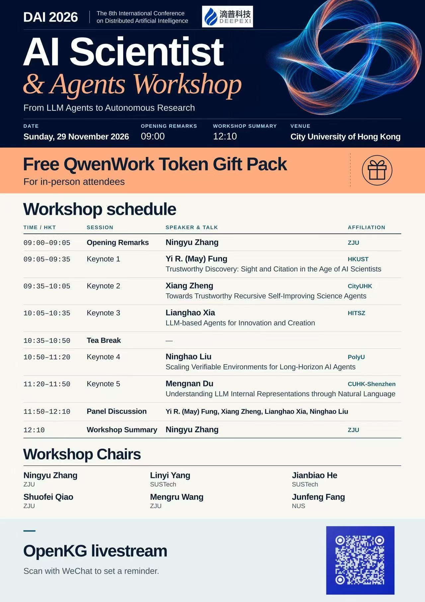

DAI 2026 / Workshop
AI Scientists
From LLM Agents to Autonomous Research
Sunday · 29 November 2026Venue · LT1, City University of Hong KongTime · 09:00–12:15, Hong Kong (UTC+8)
Program details are subject to change.
Workshop schedule
- 09:00–09:05
Opening remarks
Ningyu Zhang
Zhejiang University
- 09:05–09:35
Keynote 1 · Trustworthy Discovery: Sight and Citation in the Age of AI Scientists
Yi R. (May) Fung
HKUST
- 09:35–10:05
Keynote 2 · Towards Trustworthy Recursive Self-Improving Science Agents
Xiang Zheng
CityUHK
- 10:05–10:35
Keynote 3 · LLM-based Agents for Innovation and Creation
Lianghao Xia
HITSZ
- 10:35–10:50
Tea break
Herman Hu Concourse
- 10:50–11:20
Keynote 4 · Scaling Verifiable Environments for Long-Horizon AI Agents
Ninghao Liu
PolyU
- 11:20–11:50
Keynote 5 · Understanding LLM Internal Representations through Natural Language
Mengnan Du
CUHK-Shenzhen
- 11:50–12:10
Panel discussion
Yi R. (May) Fung, Xiang Zheng, Lianghao Xia, Ninghao Liu
- 12:10–12:15
Workshop summary
Ningyu Zhang
Zhejiang University
Workshop chairs
- Ningyu ZhangZhejiang University
- Linyi YangSouthern University of Science and Technology
- Jianbiao HeSouthern University of Science and Technology
- Shuofei QiaoZhejiang University
- Mengru WangZhejiang University
- Junfeng FangNational University of Singapore
Workshop details
For in-person attendees: Free QwenWork Token Gift Pack.
Scan the OpenKG livestream QR code on the poster with WeChat to set a reminder.
Open full-size poster